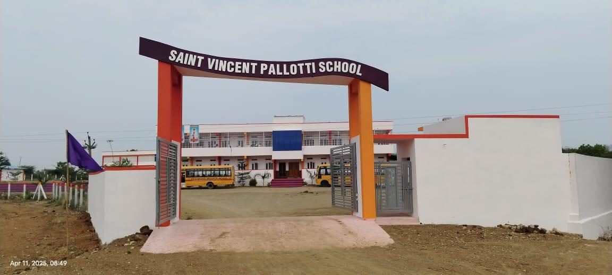

IndienIndia
Mädchenheim in TelanganaGirls' home in Telangana
Pater Bala vom Pallottiner-Orden hat mehrere Waisenhäuser gegründet. Im Mädchenheim leben rund 30 Mädchen, fast alle aus dem Volk der Lambani, einer der ärmsten Gruppen Indiens. Wir helfen bei Lebensmitteln, Hygiene, Kleidung und medizinischer Versorgung.Father Bala of the Pallottine order has founded several orphanages. About 30 girls live in the girls' home, almost all from the Lambani people, one of India's poorest communities. We help with food, hygiene, clothing and medical care.